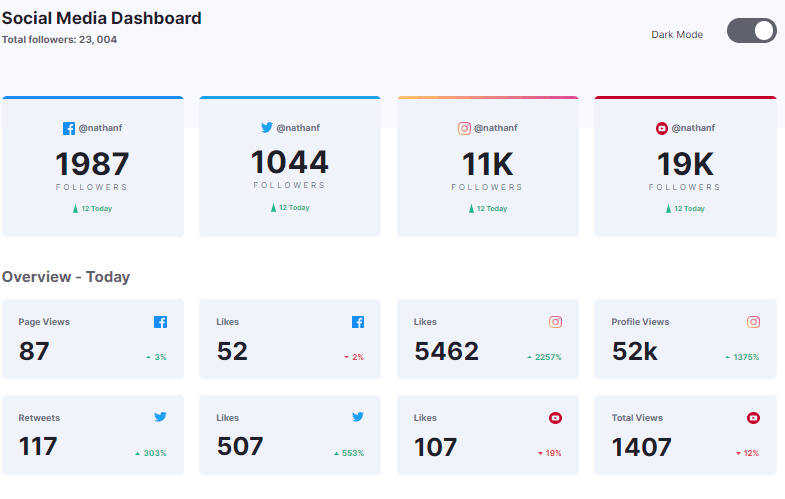

Social Media Frontend Mentor

Este es un reto de la página Fronted Mentor, lleva un plus adicional que es el modo-dark que se implementa, al igual que dependiendo del modo que tenga el usuario en su navegador así será el background del reto.
Próximamente muchos mas proyectos con tecnologías más avanzadas.
En este proyecto utilicé las siguientes tecnologías
- HTML
-
 CSS
CSS
- JavaScript